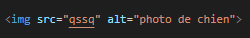
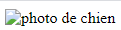
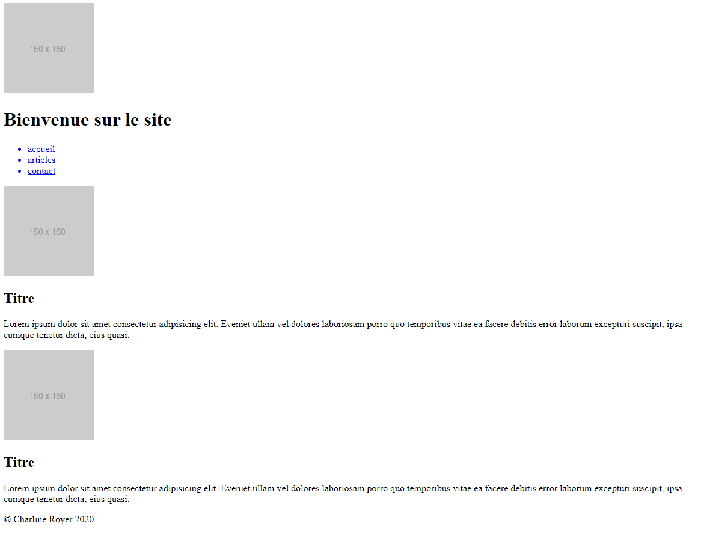

Lorsque l'on compose un site, il faut l'imaginer sous la forme d'une grandre boite qui contient à l'intérieur d'elle une multitudes de boites
Voici comme exemple un site basique avec des couleurs pas très jolies, mais c'est pas grave, c'est pour comprendre comment est fabriqué un site.
Décomposer le site en boites s'appelle faire du zonning
Le cadre vert est la balise <header> et dedans se trouvent :
- Une balise <img>
- Une balise titre de niveau 1 qui se traduit par : <h1>
- Une balise <nav> qui contient une balise <ul> qui elle même contient trois balises <li> qui elle même sont entourées d'une balise de lien <a>
// Un menu de navigation se traduit par la balise <nav>. La balise <ul> sert à déclarer une liste. Les balises <li> sont toutes les puces de la listes
Comment ça s'écrit?
<header>
<img src="images/logo.png" alt="logo">
<h1> Bienvenue sur mon site </h1>
<nav>
<ul>
<a href="accueil.html"> <li> accueil </li> </a>
<a href="articles.html"> <li> articles </li> </a>
<a href="contact.html"> <li> contact </li> </a>
</ul>
</nav>
</header>
// On utilise l'intendation pour mieux se repérer dans son code.
- Ma balise header contient une image, un titre et un menu de navigation
- Ma balise de navigation contient une liste
- Ma liste comprends les liens de puces accueil, articles, contact
le cadre orange est la balise <main> et dedans se trouvent :
- Une balise <section>
- Deux balises <div>
- Deux balises <img>
- Deux balises titre de niveau 2 qui se traduit par : <h2>
- Deux balises de textes <p>
// La différence entre une <section> et une <div>.
La section à une valeur sémantique qui regroupe un même sujet alors que la div est neutre et sert à structurer les pages.
Là notre <section> regroupe deux <div> qui, on peut l'imaginer, ont le même sujet. Par exemple des photos souvenirs d'un voyage.
Comment ça s'écrit?
<main>
<section>
<div>
<img src="images/photo1.png" alt="mer">
<h2> Mon titre </h2>
<p> Mon paragraphe </p>
</div>
<div>
<img src="images/photo2.png" alt="montage">
<h2> Mon deuxième titre titre </h2>
<p> Mon deuxième paragraphe </p>
</div>
</section>
</main>
// Ma balise main contient une section qui elle même comprends deux div
Ces deux div comprennent chacune une image, un titre et un paragraphe.
// Pour la balise img, il faut noter le nom du chemin de l'image par rapport au dossier où elle est rangée dans le projet.
Le "alt" sert de note au cas où l'image ne s'affiche pas. Cela facilite aussi la compréhension pour les personnes mal-voyantes. Elles pourront comprendre de quoi traite l'image.
Exemple :
code :

rendu :

// Pour rappel, les photos que vous utilisez pour le site, (si le dossier de projet est bien organisé comme je l'ai expliqué dans l'onglet "Organisation" ), se trouvent dans le dossier images que vous avez créer à la racine du dossier de projet.
c'est pourquoi dans la source de l'img, je commence par "images/" + le nom de la photo.
le cadre gris est la balise <footer> et dedans se trouve :
- Une balise <p>
// On peut rajouter ce que l'on veut dans le footer.
Comment ça s'écrit?
<footer>
<p> © Charline Royer 2020 </p>
</footer>
Sans le CSS le site doit donner ceci :
Il existe deux types de balises. Les balises inline-bloc et les balises bloc. Chaque balises que je vais renseigner aura un lien vers le site MDN.
Les balises de type Inline-block sont des balises occupant seulement la place du texte. Elles se mettront à la suite des unes des autres sur une même ligne tant qu'elles auront de la place.
Par exemple si j'écris plusieurs liens ceux-ci seront sur la même ligne
De base
- La balise <a> est utilisé pour des liens
- La balise <button> est utilisé pour créer un bouton
- La balise <img> est utilisé pour des images
- La balise <span> est utilisé pour un ou quelques mots
Pour les formulaires
- La balise <input> est utilisé pour créer une zone de remplissage de texte
- La balise <button> est utilisé pour créer un label que l'on met généralement devant un input
- La balise <textarea> est utilisé pour créer une zone de texte plus grande que le input
Pour la mise en page
- La balise <br> est utilisé pour sauter une ligne
Les balises de type Block prennent toute la largeur de la page et se mettront les unes en dessous des autres.
Chaque balises à son interêt sémantiquement. Imaginons une maison, il y a une cuisine, une chambre, une salle de bain, un bureau etc...
Puis les endroits non définis s'appellent des pièces
On pourrait alors imaginer que les div sont des pièces sans définitions exactes.
par exemple si je mets trois balises div celles-ci se placerons les unes en dessous des autres
Balises structurantes
- La balise <header> est utilisé pour le haut d'une page, une en-tête.
- La balise <main> est utilisé pour le contenu principal d'une page, Il se trouve entre le header et le footer
- La balise <footer> est utilisé pour le bas d'une page, un pied de page.
- La balise <form> est utilisé pour déclarer un formulaire.
- La balise <nav> est utilisé pour y mettre un menu de navigations avec des liens.
- La balise <section> est utilisé pour une partie de site.
Balises pour les listes
- La balise <ul> est utilisé pour déclarer une liste non ordonnée (sans numéros).
- La balise <ol> est utilisé pour déclarer une liste ordonnée (avec des numéros).
- La balise <li> est utilisé pour les puces des listes.
Balises pour le texte
- La balise <h1> est utilisé pour un titre de niveau 1. /!\ 1 seul H1 par pages.
- La balise <h2-h6> est utilisé pour un titre de niveau 2 à 6. Le mieux est de les utiliser dans l'ordre.
- La balise <p> est utilisé pour déclarer un paragraphe.
Autre balise quand nous ne savons plus quoi d'autre utiliser
- La balise <div> balise à utiliser en dernier recourt.